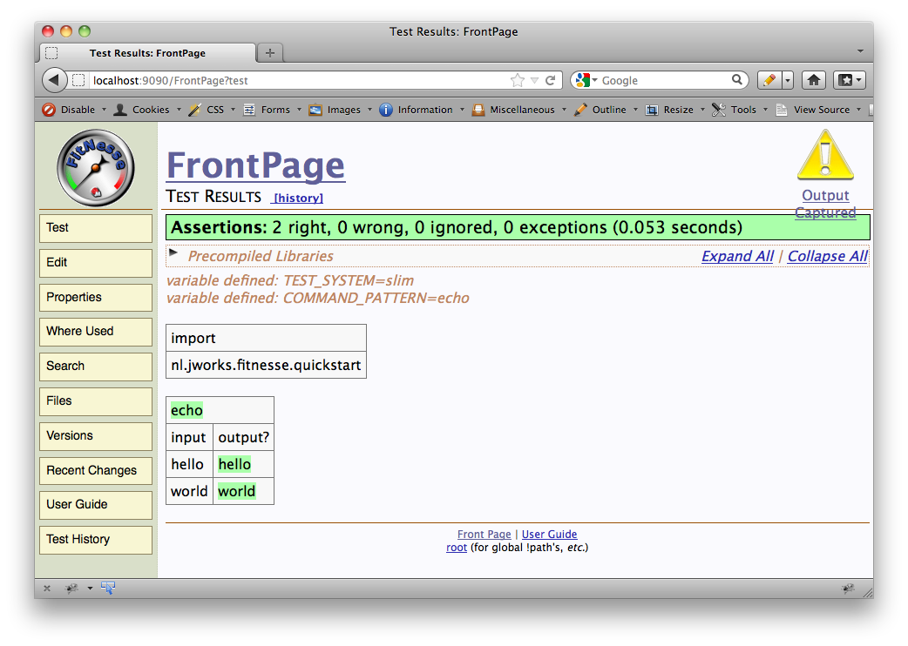

Fitnesse Grails Plugin - Reference Documentation
Authors: Erik Pragt (jWorks.nl), Marcin Erdmann, John Engelman
Version: 2.0.3
Table of Contents
1 Introduction
The Fitnesse plugin provides a integration point between the popular Open Source testing framework Fitnesse:http://www.fitnesse.org and Grails applications.This guide documents the usage of the plugin and provides an easy starting point to get you up to speed with the plugin as well as with Fitnesse.Note that the SLIM version of Fitnesse is supported. FIT, the older Fitnesse protocol, is not yet supported, nor will it be supported in the near future.
Release History
- April 26, 2012
- 2.0.3 Release!
- Small bugfix in the _Events.groovy, due to conflicts in closure name with Functional test plugin.
- Another small bugfix in the _Install.groovy. The .donotdelete file for the fitnesse directory was created in the wrong dir.
- April 23, 2012
- 2.0.2 Release!
- Small bugfix in the _Install.groovy. Thanks to Nicolas Vinet for reporting!
- April 16, 2012
- 2.0.1 Release!
- Implemented better feedback
- Fixed some bugs in the documentation, most notably the quickstart.
- Enabled PDF support for documentation
- Enabled bundled example project
- April 12, 2012
- 2.0 Release!
- After a long time of inactivity, there's a new release, thanks to John Engelman. Thanks for the great work John!
- JUnit Test Reports implemented
- Included latest Fitnesse (20111025)
- June 10, 2011
- 1.0 Release!
- Feature: Support for GivWenZen
- Bugfix: Fixed the tutorial documentation (thanks Pierre D. Tremblay!)
- Bugfix: Fixed the dependency resolution of libraries (thanks Steef de Bruijn)
- Bugfix: Fixed plugin scopes (thanks Steef de Bruijn)
- May 18, 2011
- 0.95 Release
- Feature: Enabled easy mapping of enums classes
- Improvement: Improved Query Fixture DSL to allow dotted notation
- Improvement: Enhanced reloading of application
- March 22, 2011
- 0.9 Release
- We upped the version number to 0.9 because the plugin is quite feature complete now, and is almost stable enough to be a 1.0.
- Feature: Introduced @Fixture annotation, so fixtures can now be given any name (they don't have to be suffixed with Fixture), as long as they are annotated with the annotation.
- Feature: Added Transaction support
- Bugfix: Fixed JSON conversion for domain classes and collections
- Bugfix: Fixed reloading classes and fixtures that use inheritance
- Bugfix: Fixed grails test-app
- Bugfix: Fixed issues in the documentation
- March 1, 2011
- 0.5 Release
- Feature: Fitnesse testrunner created. Grails applications can now be tested using: grails test-app integration:fitnesse "FrontPage.GrailsTestSuite.SlimTestSystem?suite"
- Feature: Fitnesse integrated. Fitnesse can now be started using: grails run-fitnesse
- Feature: Fitnesse can be disabled by setting the grails.plugin.fitnesse.disabled property to true
- Improvement: Internal Fitnesse upgraded to the newest Fitnesse version
- Improvement: Naming of configuration parameters have changed to be more consistent. *Beware: the 'plugins' configuration option has changes to 'plugin' (without the 's')
- Improvement: Bundled testproject in Github
- Improvement: Fixture classes are now Spring beans
- Bugfix: Fixed lazyloadingexception
- Bugfix: Fixed exception message when a given constructor is not found for a fixture
- Bugfix: Fixed reloading of services to give errors in Fixtures
- Bugfix: Marcin's surname is fixed in the documentation!
- November 16, 2010
- 0.4 Release, thanks to Marcin Erdmann!
- Complete refactoring of the plugin thanks to Marcin Erdmann (ie using Artefacts, Artefact Templates, JSON Code to enable complex objects, and more!)
- Important: All fixtures should now be end with the suffix 'Fixture', as in 'CalculateFixture'. In the Wiki you can still refer to them as 'Calculate', but the plugin adds a Fixture suffix when looking for the class.
- Improved error messages
- You can now create complex objects from within Fitnesse by using JSON syntax.
- More documentation!
- Fixed some bugs in documentation (thanks Olivier Hedin for reporting!)
- October 12, 2010
- 0.3 Release.
- Added more documentation (configuration options, quickstart), refactored the internals
- Added verbose logging switch
- Fixed a Grails reloading bug, which caused ports to be opened twice. Now the plugin closes all ports, and reopens them whenever Grails forces a restart
- You can now throw StopTest Exceptions from Fixture constructors (which is not possible in the Java Fitnesse)
- September 19, 2010
- 0.2 release. First public release. Includes lots of documentation, including a tutorial with 3 fixture types.
- September 15, 2010
- initial 0.1 release.
1.1 Features
The Fitnesse plugin supports some additional features besides the standard Fitnesse functionality.Moved Fitnesse to it's own Phase/Type (since 2.0)
You can now usegrails test-app fitnesse:fitnesse. The phase runs in integration modeIntegration with JUnit reports (since 2.0)
The Fitnesse output, which is written to target/test-reports/fitnesse, will now be parsed to create JUnit Test objects. This allows the JUnit Reporting framework to output the .txt file and the JUnit .xml file. This also allows Fitnesse test results to participate in the Grails Test Report HTML file.Support for GivWenZen (since 1.0)
Since version 1.0, we support the GivWenZen library. GivWenZen allows a user to use the BDD Given When Then vocabulary and plain text sentences to help a team get the words right and create a ubiquitous language to describe and test a business domain. See the GivWenZen website for more information.To use GivWenZen in Grails Fitnesse, import thefitnesse.grails package and use the GivWenZenForGrails fixture in a script table, as can be seen in the example below:|import| |fitnesse.grails||script| |start|giv wen zen for grails||script| |given|the number 5| |when|incrementing it by 3| |then|the result is 8||script| |given|the number 1| |when|incrementing it by 2| |and|incrementing it by 3| |then|the result is 6|
import org.givwenzen.annotations.DomainStep import org.givwenzen.annotations.DomainSteps@DomainSteps class GivWenZenSupportSteps { private int number @DomainStep("the number (\\d+)") void setNumber(int number) { this.number = number } @DomainStep("incrementing it by (\\d+)") void incrementNumber(int by) { number += by } @DomainStep("the result is (\\d+)") boolean expect(int result) { number == result } }
Automatic Enum mapping (since 0.95)
Since version 0.95, it's possible to automatically map enum values. Just specify the value of the enum in the table, and you're done.An example:class MyEnumFixture {
Color color
}enum Color { RED, GREEN, BLUE }|my enum | |color|color?| |RED |RED |
Nested property mapping for Query Fixtures (since 0.95)
It was already possible (since version 0.4) to create a simple Query Fixture using the Query Fixture DSL. This DSL has been extended by also allowing nested properties using a dotted (.) notation, as can be seen below:class NestedPropertyKeyValueQueryFixture {
static queryFixture = true static mapping = ["name":"author.name", "birthYear":"author.birthYear", "title":"title"] def queryResults() {
return [new Book(title:'Grails in Action', author: new Author(name:"Peter Ledbrook", birthYear: 1980))]
}
}Fixture annotation (since 0.9)
Since version 0.9, it's possible to annotate Fixture classes with the @Fixture annotatation. This means that fixtures can now be given any name (ie. they don't have to be suffixed with Fixture), as long as they are annotated with the @Fixture annotation.@Fixture
class BuyBook {
// contents here
}Transaction support (since 0.9)
Transaction support provides three fixtures called BeginTransaction, Commit and Rollback. To use you need to import the fitnesse.grails package, i.e. in SetUp or SuiteSetUp:|import|
|fitnesse.grails|begin transaction and rollback tables to your test page:|begin transaction|--some test tables--|rollback|
Templates (since 0.4)
You can now easily create Fixtures by typing:grails create-fitnesse-query-fixture <name of fixture>
grails create-fitnesse-fixture <name of fixture>
Complex objects (since 0.4)
You can now create complex objects from within Fitnesse. This uses the JSON format, since it's easy to read and write, and is becoming quite a standard.An example can be seen below:Wiki|create book inventory |
|book |amount|
|{author: Stephen King, title: IT} | 3|
|{author: Dean Koontz, title: Chase}| 5|class CreateBookInventoryFixture {
Book book int amount def bookService CreateBookInventoryFixture() {
Book.list()*.delete()
} void execute() {
amount.times {
book.id = null
bookService.addBook(book)
}
}
}class Book {
String author
String title
}|json objects conversion with collections|
|producer|models|match?|
|{name: 'Audi', models: [{name: 'A3'}, {name: 'A4'}]}|[{name: 'A3'}, {name: 'A4'}]|true|class JsonObjectsConversionWithCollectionsFixture {
CarProducer producer List<CarModel> models boolean match() {
producer.models*.name.containsAll(models*.name)
}
}class CarProducer {
String name
static hasMany = [models: CarModel]
}class CarModel {
String name
}Query Fixture DSL (since 0.4)
To make writing Query fixtures much easier, we've introduced the concept of a simple mapping DSL. This means that mapping values from, let's say a services, becomes almost trivial.Consider the following Service method:def checkInventory() {
Book.executeQuery("select b.title, b.author, count(*) from Book b group by title, author")
}class CheckBookInventoryFixture {
static queryFixture = true // indication that this is a query fixture
static mapping = [title: 0, author: 1, amount: 2] // the mapping def bookService // injected service def queryResults() { // queryResults() method, which must be named like this!
bookService.checkInventory()
}
}class BookService {
List<Book> checkInventory() {
return Book.list()
}
}class CheckBookInventoryFixture {
static queryFixture = true // indication that this is a query fixture
static mapping = ["title", "author", "amount"] // a different mapping def bookService // injected service def queryResults() { // queryResults() method, which must be named like this!
bookService.checkInventory()
}
}class CheckBookInventoryFixture {
static queryFixture = true // indication that this is a query fixture
static mapping = ["title":"objectTitle", "author":"theAuthor", "amount":"amount"] // a different mapping, where the key is the name of the test, and the value the property name of the object def bookService // injected service def queryResults() { // queryResults() method, which must be named like this!
bookService.checkInventory()
}
}Strings as methods
Groovy supports methods like"this is a method". The Fitnesse plugin also supports this, making some Fixtures more readable.Example
class MyFixture {
boolean "check if customers exists"(int customerNumber) {
// …
}
}Default arguments
Groovy supports default arguments. The Grails Fitnesse plugin also supports this:class MyFixture {
MyFixture(boolean clearDatabase = false) {
// …
}
}|my fixture|true|Untyped arguments
Groovy supports untyped method arguments. The Grails Fitnesse plugin also supports this:class MyFixture {
boolean checkCustomer(customerNumber) {
// …
}
}Note that the Fitnesse SLIM protocol only supports Strings and Lists. A result of this, is that when using untyped arguments, things could go wrong. An example of this is when using an integer. This integer is interpreted as being a String, and hence it's converted to it's value, so int 1 becomes int 49. So, if you're unsure, use types in your fixtures.
Automatic reloading of Fixtures
The Fixtures in thegrails-app/fitnesse directory are automatically reloaded and injected by Grails. This enables faster testing and faster development!Functions are getters
Fitnesse decision tables do not have getters and setters, but setters and functions. A function is the same as a getter, but without the 'get' part. (Still with me?). An example:Normal Fitnesse|my decision fixture| |digit | roman?| |1 | I| |5 | V|
class MyDecisionFixture {
int digit
String roman void execute() {
roman = RomanNumberConverter.convertDigit(digit)
} String roman() {
return roman
}
}class MyDecisionFixture {
int digit
String roman void execute() {
roman = RomanNumberConverter.convertDigit(digit)
}
}Improved Stop Test Exceptions
You can now throw StopTest Exceptions from Fixture constructors, to halt all further test execution. This is currently not handled correctly in the Java version of Fitnesse.2 Getting started
You can install the plugin by typing$ grails install-plugin fitnesse
Note that currently you'll need to start up and close your Grails application yourself; the plugin doesn't do this for you. This might change in the future, but for now, it's a manual step.The internal Fitnesse server allows connections made by the Fitnesse Wiki to be interpreted by Fixtures, which run against your application.
2.1 Quickstart
For the impatient, this is the quickstart to get Fitnesse to work with Grails.Step 1: Create a new Grails application
grails create-app myapp cd myapp
Step 2: Install the Fitnesse Plugin
grails install-plugin fitnesse
Step 3: Start the Grails application
grails run-app
Step 4 (in a differtent console or terminal): Start Fitnesse
grails run-fitnesse
Step 5: Configure Fitnesse (for Linux/MacOS)
Browse to http://localhost:9090, and replace (See 'Edit' in the left side menu) the contents of the page with the following:!define TEST_SYSTEM {slim}
!define COMMAND_PATTERN {echo}
|import |
|nl.jworks.fitnesse.quickstart|
|echo|
|input|output?|
|hello| hello|
|world| world|
The COMMAND_PATTERN needs to be configured to point to an executable to prevent Fitnesse from starting a server.
On Windows, for example, this can be an empty batch file:
!define COMMAND_PATTERN {c:/myemptybat.bat}.
Save the page.Step 6: Verify it works
Click on Properties, select Test under 'Page type', click on Save properties to save the page.Now press Test. Everything should be Green now!
2.2 Fixtures
Fitnesse Fixtures, not to be confused with Grails Fixtures, allow a bridge between the Fitnesse Wiki and the System Under Test (SUT).Fixtures are similar to Grails artifacts and share most of their characteristics, like hot reloading and Dependency Injection. All Fixtures should be created in the 'Fitnesse' directory in thegrails-app directory.Example
Below you'll find an example Wiki test plus the Fixture which will serve as the bridge between the Wiki and the SUT.Wiki:|loan calculator | |income|debts|category?| |10000 |500 |A | |5000 |10000|C |
class LoanCalculatorFixture {
// Input parameters
int income
int debts // Output parameter
String category // Dependency Injected
def loanCalculationService void execute() {
this.category = loanCalculationService.calculateLoanCategory(income, debts)
}
}- the fixture name (
loan calculator) - the header(income, debts, and category)
- and the body (the rest of the table). As you can see,
categoryis suffixed with a question mark to indicate this is not a value to be set, but rather to be read ('get'). As such, first the input values are set, then the execute method is called by Fitnesse, and finally the output are called, in this case category.
A small note: normally output parameters are 'functions' and not getters. This means you would need an extra method for the output parameters. In the Grails version of the Fitnesse runner, this isn't necessary (fortunately!), and Fitnesse will check both the 'functions' as well as the Groovy properties. Less code to write, less code to maintain!
2.3 Wiki
The Wiki contains all the tests. The wiki consists of two parts:- Formatted text
- Tables
| Name | Description |
|---|---|
| Decision Table | Supplies the inputs and outputs for decisions. This is similar to the Fit Column Fixture |
| Query Table | Supplies the expected results of a query. This is similar to the Fit Row Fixture |
| Script Table | A series of actions and checks. Similar to Do Fixture. |
| Import | Add a path to the fixture search path. |
| Name | Description |
|---|---|
| Table Table | Whatever you want it to be! |
| Subset Query Table | Supplies a subset of the expected results of a query. |
| Ordered query Table | Supplies the expected results of a query. The rows are expected to be in order. This is similar to the Fit Row Fixture |
| Comment | A table that does nothing. |
| Scenario Table | A table that can be called from other tables. |
| Library Table | A table that installs fixtures available for all test pages |
2.4 Testrunner
The Fitnesse Plugin can be used when testing your application from the command line by using the bundled testrunner. The testrunner can be launced by typing:grails test-app integration:fitnesse <name of suite or test>
grails test-app integration:fitnesse "FrontPage.GrailsTestSuite.SlimTestSystem?suite"grails test-app integration:fitnesse "FrontPage.GrailsTestSuite.FirstSuite?suite" "FrontPage.GrailsTestSuite.SecondSuite?suite"
Run sequence
The default Wiki Suite or Test which will be run usinggrails test-app will be determined in the following way:
- First, if a suite or test is specified as an argument to
grails test-app, the argument will be used - Second, if a suite or test is specified in the Config.groovy, that one will be used
- Thirdly, all tests defined on the Fitnesse Frontpage (FrontPage?suite) will be run if none of the above options are applicable
3 Configuration options
The following describes the list of configuration options. As in the convention over configuration principle, these configurations are not necessary, but can be used to change the behavior of the plugin a litte.Wiki options
The Wiki Server port
The Wiki contains all the test suites. It is an embedded HTTP server which by default is accessible on port 9090, but which can be changed if needed.This can be done by setting thegrails.plugin.wiki.port option. An example can be found below:grails {
plugin {
wiki {
port = 9090
}
}
}The Wiki Server directory
The Wiki pages are stored in a specific directory, <project-root>/'wiki' by default.This can be changed if needed, by setting thegrails.plugin.fitnesse.wiki.dir option. An example can be found below:grails {
plugin {
wiki {
dir = 'otherwiki'
}
}
}The default Wiki Suite or Test
When supplying no arguments tograils test-app, all tests on the Fronpage will be run.This can be changed if needed, by setting the grails.plugin.fitnesse.wiki.defaultSuite option, which is a list of Suites or Tests. An example can be found below:grails {
plugin {
fitnesse {
wiki {
defaultSuite = ["FrontPage.GrailsTestSuite.SlimTestSystem?suite"]
}
}
}
}grails test-app.Note: see 'Integration testing' to see which option takes presedence over the other.Slim Server options
Slim Server Port
The SlimServer opens ports and listens to a server socket. The default is 8085 and it cycles through the next 10 ports to avoid collisions. If 8085 is not a convenient port number for you, you can set the SLIM_PORT variable in the Fitnesse Wiki to any port you like. See for more information the Fitnesse User Guide.Changing the port in the Fitnesse Wiki also requires a change in the plugin configuration to tell the plugin on which port to listen.To change the port in the Grails application, you can set it in the Config.groovy. Add the following:grails {
plugin {
fitnesse {
slim {
port = 8085
}
}
}
}Logging
To add more logging to the application, add the following to the log4j DSL:debug 'nl.jworks.grails.plugin.fitnesse'
verbose value to true:grails {
plugin {
fitnesse {
slim {
verbose = true
}
}
}
}Disable the plugin per environment
By default, the plugin is enabled for all environments, including production. However, it is possible to selectively disable the plugin per environment. This can be done by setting thegrails.plugin.fitnesse.disabled option to true.An example from Config.groovy which disables the plugin in production:
environments {
production {
grails {
plugin {
fitnesse {
disabled = true
}
}
}
}
}4 Differences from other test frameworks
Fitnesse is an Acceptance Test framework, and, as such, is different from Functional or Unit test frameworks.While Unit Tests focuses more on the design of the code and the functional correctness on a unit level (as in: per class) and Functional tests focus more on the UI and flow of pages, Fitnesse fills the gap between those areas. Fitnesse focuses on the correct behaviour of Business Logic. Fitnesse does this without the need for a UI, but it focus is much wider than a single unit of work.Fitnesse allows complete scripts of business functionality to be tested, with complete integration in the system. Also, because Fitnesse tests are not concerned with implementation details, Fitnesse Tests can be written Test First, allowing a fully integrated TDD approach from a requirement level, which isn't possible with most other frameworks.For more information about Fitnesse, please check the Fitnesse website.4.1 Comparison Matrix
This comparison matrix provides a quick overview of the possibilities of different frameworks.| Name | Supports TDD | Refactor Safe | Collaborative | Target audience |
|---|---|---|---|---|
| (x)Unit | Yes | No | No | Developers |
| Selenium | No | Yes | No | Developers/Testers |
| Fitnesse | Yes | Yes | Yes | Developers/Testers/Business |
5 Tutorials
5.1 Integration testing
This tutorial describes the creation of a simple application and how to test it.1. Create your Grails application.
$ grails create-app bookstore $ cd bookstore
2. Install the plugin.
$ grails install-plugin fitnesse
3. Start the Grails server.
$ grails run-app
4. Start the Fitnesse server.
Since Fitnesse is bundled with the plugin, there's no need to download anything.The following will extract Fitnesse and start it on the default port, 9090.$ grails run-fitnesse
5. Create the test
Open a web browser and point it to http://localhost:9090 . The Fitnesse front page will show up.Click on Edit, and add the following to the text area:^BookStoreTest . Press Save.You will now have a text with a question mark next to it. Click on the question mark to create a new page.In the new page, remove the contents of the text area and replace it by the following:!define TEST_SYSTEM {slim}
!define COMMAND_PATTERN {echo}|import|
|bookstore||create book inventory|
|author|title|amount|
|Stephen King|IT|3|
|Dean Koontz|Chase|5||script|buy book scenario|
|customer buys|2|books with title|IT|
|customer buys|1|books with title|Chase||query:check book inventory|
|author|title|amount|
|Stephen King|IT|1|
|Dean Koontz|Chase|4|The COMMAND_PATTERN should (currently) have a dummy value! I have chosen 'echo' since I'm on a Mac, but for Windows users you need to create a batch file, for example, echo.bat, without any contents. The reason for doing this is that Fitnesse normally starts a Slim Server itself. However, in our case, our Grails application starts the Slim Server for us. So, to prevent starting the server, we use a dummy command pattern.In this test, you've used 3 kinds of Test tables:
- a Decision Table (
create book inventory) used to setup the data - a Script Table (
buy book scenario) to execute the test - a Query table (
check book inventory) to verify the results of the test
Could not invoke constructor for CreateBookInventory[0]. This is because no Fixtures have been created yet. This way of working is in line with the 'Red-Green-Refactor' TDD mantra; our test clearly is red (or yellow, in this case), so we need to focus on getting the test green. To make the test pass, we need to create the fixtures.6. Creating the Fixtures
We'll start by creating the first Fixture mentioned in the error message, which is theCreateBookInventory Fixture. To create the Fixture, use the Grails task @create-fitnesse-fixture. You can involve the script by typing the following:$ grails create-fitnesse-fixture CreateBookInventory
in the grails-app/fitnesse/bookstore@ directory.Because the Fitnesse plugin will reload the Fixtures automatically, pressing the Test* button in the Wiki will already show that the Fixture has been loaded correctly, and the cell is colored green by Fitnesse. If for some reason this doesn't work, please restart the Grails application, and try again.Now, we'll have to create the author, title and amount properties in the Fixture and the corresponding Book domain class.Note, Grails might crash due to the Fixture missing the domain classes. Whenever this happens, please restart Grails.
6.1 The Decision Table
The Fixture to support the Decision Table should look like this:class CreateBookInventoryFixture {
String author
String title int amount def bookService CreateBookInventoryFixture() {
Book.list()*.delete()
} void execute() {
amount.times {
bookService.addBook(new Book(author: author, title: title))
}
}
}execute method. This method is called after input parameters have been set, but before any output parameters are requested. This allows us to have a place to do something with the input, and prepare the output.The Book class like this:class Book {
String author
String title
}class BookService { static transactional = true def addBook(book) {
book.save()
} def buyBook(title) {
Book.findByTitle(title).delete()
} def checkInventory() {
Book.executeQuery("select b.title, b.author, count(*) from Book b group by title, author")
}
}6.2 The Script Table
The Script Fixture to execute the Script Table should look like this:class BuyBookScenarioFixture {
def bookService void customerBuysBooksWithTitle(int amount, title) {
amount.times {
bookService.buyBook(title)
}
}
}Note that this implementation is very simplistic. In this example, I simply delete the books from the inventory instead of assigning them to a customer or a basket.
6.3 The Query Table
Finally, to verify if our assertions match the execution of our code, we need to check the results of our actions. We do this by using a Query Table.class CheckBookInventoryFixture {
static queryFixture = true // indication that this is a query fixture
static mapping = [title: 0, author: 1, amount: 2] // the mapping def bookService // injected service def queryResults() { // queryResults() method, which must be named like this!
bookService.checkInventory()
}
}The mapping is used here to map the column names to the position of the values returned by the queryResults method. For more information, please check the 'Query DSL' part in the 'Features' documentation.Now, when running the Test again in Fitnesse, everything should be green, and you have your first test running. Not you can refactor your code if you want, and check if the result is still valid by rerunning the Tests!